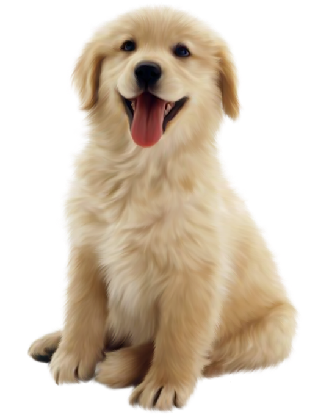

Цим оченятам дуже потрібні любов і турбота
Вірний друг радітиме тобі завжди. Йому потрібно дуже мало - теплий дім та дбайливий господар

Про нас
В притулку весь час знаходиться 350 дорослих та 20 цуценят. В залежності від швидкості прилаштувань цифри змінюються. Все почалося зі співчуття до масово викинутих тварин у місті, доля яких всім була байдужою. Власними зусиллями та особистими коштами волонтерів та небайдужих людей ми розпочали прилаштування та стерилізацію тварин для зменшення кількості безхатьків. За роки нашої праці в рік стерилізується понад 400 тварин, а дім знаходять близько 240 безхатьків, деяких вдається прилаштувати навіть за кордон. Ми постійно покращуємо умови для проживання собак, проводимо ремонтні роботи вольєрів, облагороджуємо територію притулку. Проводимо масову вакцинацію собак, щоб уникнути спалаху захворювань. Наша робота вимагає дуже багато зусиль, як фізичних, так і фінансових. Допомога від міста полягає тільки у стерилізації та кастрації тварин, а всі інші витрати, включно із зарплатою, оплатою комунальних послуг, ремонтними роботами та лікуванням хворих тварин - це все на руках волонтерів та благодійних коштах. Ми щиро сподіваємося, що наша праця не марна і нас підтримають люди по всьому світу!
Вибери собі вірного друга
Не купуй – прихисти, адже справжня дружба не продається!